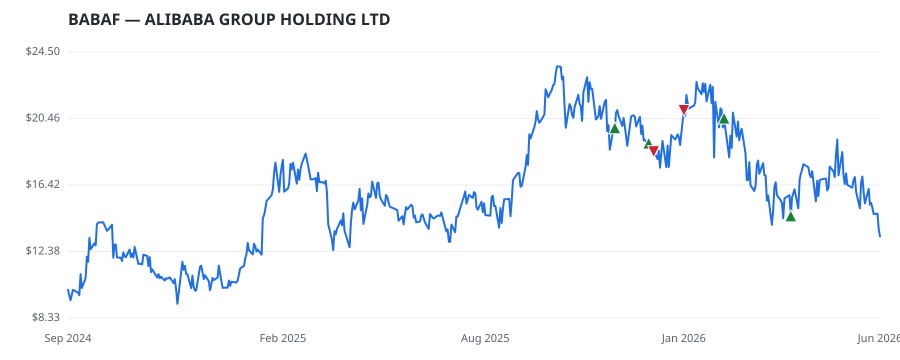

bullish · bearish · n/a — dots: price>SMA10 · SMA10>SMA50 · SMA50>SMA200 · up>down volume (20d)
Other · unknown cap
Members who bought BABAF earned a dollar-weighted -6.5% from their disclosure dates, versus +9.0% for the S&P 500 over the same holding windows (-15.5% alpha).

▲ green = a disclosed purchase · ▼ red = a disclosed sale (plotted on disclosure date)
ALIBABA GROUP HOLDING LTD
| Member | Chamber | Out-performer | Disclosed buys $ | Return on buys |
|---|---|---|---|---|
| Gilbert Cisneros | house | — | $32K | -6.5% |
Disclosed $ figures are bracket midpoints — filings report ranges (e.g. $1,001–$15,000), not exact amounts.